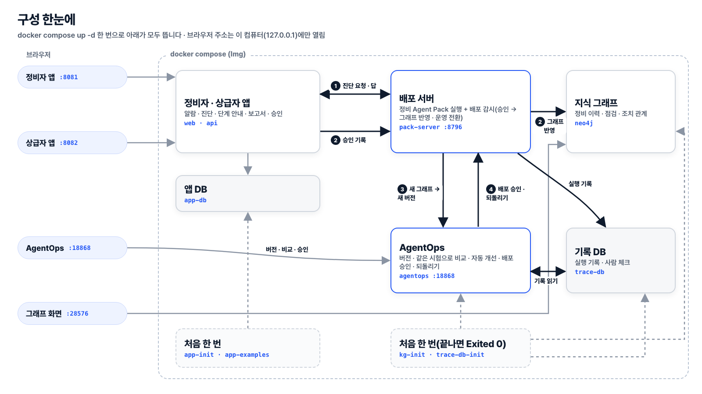

무엇이 어떤 컨테이너로 뜨고, 데이터가 어디서 어디로 가는지 봅니다. 처음이라면 읽기만 하고 02로 넘어가도 됩니다.

| 이름 | 하는 일 | 브라우저 주소(기본 포트) | 언제 |
|---|---|---|---|
| app-db · api · web | 정비자 앱 · 상급자 앱과 그 DB | 정비자 http://127.0.0.1:8081 · 상급자 http://127.0.0.1:8082 | 계속 돎 |
| app-init · app-examples | 앱 DB 표 · 시드 · 메인 시나리오 첫 상태 · 예시 이력 | — | 처음 한 번 돌고 끝남(Exited 0이 정상) |
| neo4j | 지식 그래프(정비 이력 · 점검 · 조치 관계) | http://127.0.0.1:28576 | 계속 돎 |
| kg-init | 시드 이력 → 그래프 → 첫 Pack 준비 | — | 처음 한 번 돌고 끝남(Exited 0이 정상) |
| pack-server | 배포 서버(정비 Agent Pack 실행) + 배포 감시 | http://127.0.0.1:8796/health | 계속 돎 |
| trace-db · trace-db-init | 실행 기록 · 사람 체크 기록 DB와 그 첫 준비 | 밖에 안 엶 | DB는 계속 · init은 한 번 돌고 끝남 |
| agentops | AgentOps — 버전 · 평가 · 자동 개선 · 배포 승인 | http://127.0.0.1:18868 | 계속 돎(빈 상태로 시작) |
| 폴더 | 내용 |
|---|---|
services/app | 정비자 · 상급자 앱 · API |
services/pack | 정비 Agent Pack · 그래프 적재기 · 시험 묶음(services/pack/pack/evals → 컨테이너 안 /packs/first/evals) |
services/deploy | 배포 서버 · 배포 감시 |
services/agentops | AgentOps 서버 · 화면 |
vendor/agent-pack-runtime | Pack 실행기 |
data/ | 시드 이력(seed/) · 알람 자료(app/) · AgentOps 실행 설정(agentops/) |
scripts/ | 화면이 없는 연결 · 초기화 대본 |
docs/ | 이 문서들 |
services/agentops/는 AgentOps 원본을 복사한 것이고, 바뀐 곳은 services/agentops/FROZEN-DIFF.md에 적혀 있습니다. AgentOps는 열쇠 둘을 씁니다: OpenAI(평가 · 개선) · Jev(효율 개선 품질 검토 — 문서 02 4번). 원본은 리눅스에서 실제 모드를 거절합니다. 도커 컨테이너는 리눅스이므로 이 저장소의 docker-compose.yml이 LLMOPS_ALLOW_REAL_ON_LINUX=1을 켜서 실제 모델을 씁니다(켤 때만 읽는 설정 · 없으면 원본 그대로). AWS 같은 리눅스 서버에 올릴 때도 이 줄이 필요합니다. 끄면(.env에 LLMOPS_LLM_MODE=fake) 가짜 모드로 돌아 점수 · 비용이 실제가 아닙니다.
자료 출처: AI4I 2020 Predictive Maintenance Dataset — UCI Machine Learning Repository, CC BY 4.0.